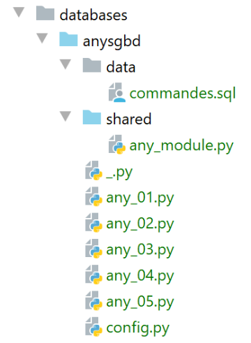

18. 编写与 SGBD 无关的代码
我们之前看到，在某些情况下，可以将为 SGBD 和 MySQL 编写的 Python 代码轻松迁移到为 SGBD 和 PostgreSQL 编写的代码上。 在本章中，我们将展示如何将这种方法系统化。建议的架构如下：

我们希望连接器的选择（即 SGBD 的选用）能通过配置实现，而无需重写脚本。需要提醒的是，这仅在脚本未使用 SGBD 的专有扩展时才可行。
脚本的目录结构如下：

[any_xx]脚本沿用了此前针对SGBD、MySQL和PostgreSQL所研究的脚本。 我们不会逐一复述。我们将重点关注最复杂的脚本 [any_04]。需要说明的是，该脚本执行了以下文件 [data/commandes.sql] 中的 SQL 命令：
# 删除表 [personnes]
drop table if exists personnes
# 创建人员表
create table personnes (id int primary key, prenom varchar(30) not null, nom varchar(30) not null, age integer not null, unique (nom,prenom))
# 插入两名人员
insert into personnes(id, prenom, nom, age) values(1, 'Paul','Langevin',48)
insert into personnes(id, prenom, nom, age) values (2, 'Sylvie','Lefur',70)
# 显示表
select prenom, nom, age from personnes
# 故意引发错误
xx
# 插入三条人员记录
insert into personnes(id, prenom, nom, age) values (3, 'Pierre','Nicazou',35)
insert into personnes(id, prenom, nom, age) values (4, 'Geraldine','Colou',26)
insert into personnes(id, prenom, nom, age) values (5, 'Paulette','Girond',56)
# 显示表
select prenom, nom, age from personnes
# 按姓氏字母顺序排列人员列表，同姓者按名字字母顺序排列
select nom,prenom from personnes order by nom asc, prenom desc
# 按年龄降序排列，年龄在 [20,40] 区间内的人员列表
# 随后按姓氏字母顺序排列（同姓者按名字字母顺序排列）
select nom,prenom,age from personnes where age between 20 and 40 order by age desc, nom asc, prenom asc
# 添加布鲁诺夫人
insert into personnes(id, prenom, nom, age) values(6, 'Josette','Bruneau',46)
# 更新其年龄
update personnes set age=47 where nom='Bruneau'
# 姓布鲁诺的人员名单
select nom,prenom,age from personnes where nom='Bruneau'
# 删除布鲁诺夫人
delete from personnes where nom='Bruneau'
# 姓Bruneau的人员列表
select nom,prenom,age from personnes where nom='Bruneau'
我们已修改第 2 行，确保当表 [personnes] 不存在时，该命令对 SGBD、MySQL 和 PostgreSQL 具有相同的行为。
脚本 [any_04] 由以下脚本 [config.py] 进行配置：
def configure():
import os
# 该脚本文件的绝对路径
script_dir = os.path.dirname(os.path.abspath(__file__))
# syspath 文件夹配置
absolute_dependencies = [
# 本地文件夹
f"{script_dir}/shared",
]
# syspath 设置
from myutils import set_syspath
set_syspath(absolute_dependencies)
# 应用程序配置
config = {
# 支持的数据库管理系统
"sgbds": {
"mysql": {
# DBMS 连接器
"sgbd_connector": "mysql.connector",
# 集成数据库管理系统管理功能的模块名称
"sgbd_fonctions": "any_module",
# 连接凭据
"user": "admpersonnes",
"password": "nobody",
"host": "localhost",
"database": "dbpersonnes"
},
"postgresql": {
# DBMS连接器
"sgbd_connector": "psycopg2",
# 集成DBMS管理功能的模块名称
"sgbd_fonctions": "any_module",
# 连接标识符
"user": "admpersonnes",
"password": "nobody",
"host": "localhost",
"database": "dbpersonnes"
}
},
# 命令文件SQL
"commands_filename": f"{script_dir}/data/commandes.sql"
}
# 应用程序的系统路径
from myutils import set_syspath
set_syspath(absolute_dependencies)
# 加载配置
return config
新内容位于第 18-43 行：
- 第 20 行：[sgbds] 是一个字典，包含两个键：第 21 行的 [mysql] 和第 32 行的 [postgresql]；
- 与这些键关联的值是一个字典，其中包含用于连接到 SGBD 的参数：
- 第21-32行：连接SGBD和MySQL所需的参数；
- 第 23 行：要使用的 Python 连接器；
- 第 25 行：包含共享函数的模块；
- 第 26-30 行：连接的标识符；
- 第 32-41 行：连接 SGBD 和 PostgreSQL 所需的相同参数；
执行命令文件 SQL [data/commandes.sql] 的脚本 [any_04] 如下：
# 配置应用程序
import config
config = config.configure()
# 系统路径已配置 - 可以进行导入
import importlib
import sys
# 验证调用语法
# argv[0] sgbd_name true / false
# 需要 3 个参数
args = sys.argv
erreur = len(args) != 3
if not erreur:
# 获取我们需要的两个参数
sgbd_name = args[1].lower()
with_transaction = args[2].lower()
# 验证这两个参数
erreur = (with_transaction != "true" and with_transaction != "false") \
or sgbd_name not in config["sgbds"].keys()
# 错误？
if erreur:
print(f"syntaxe : {args[0]} (1) sgbd_name (2) true / false")
sys.exit()
# 配置 sgbd_name
sgbd_config = config["sgbds"][sgbd_name]
# sgbd_name 的连接器
sgbd_connector = importlib.import_module(sgbd_config["sgbd_connector"])
# 函数库
lib = importlib.import_module(sgbd_config["sgbd_fonctions"])
# 待显示文本的计算
with_transaction = with_transaction == "true"
if with_transaction:
texte = "avec transaction"
else:
texte = "sans transaction"
# 显示
commands_filename=config['commands_filename']
print("--------------------------------------------------------------------")
print(f"Exécution du fichier SQL {commands_filename} {texte}")
print("--------------------------------------------------------------------")
# 执行文件中的命令 SQL
connexion = None
try:
# 连接
connexion = sgbd_connector.connect(
host=sgbd_config['host'],
user=sgbd_config['user'],
password=sgbd_config['password'],
database=sgbd_config['database'])
# 执行命令文件 SQL
erreurs = lib.execute_file_of_commands(sgbd_connector, connexion, commands_filename, suivi=True, arrêt=False,
with_transaction=with_transaction)
except (sgbd_connector.InterfaceError, sgbd_connector.DatabaseError) as erreur:
print(f"L'erreur suivante s'est produite : {erreur}")
finally:
# 关闭连接
if connexion:
connexion.close()
# 显示错误数量
print("--------------------------------------------------------------------")
print(f"Exécution terminée")
print("--------------------------------------------------------------------")
print(f"Il y a eu {len(erreurs)} erreur(s)")
# 显示错误
for erreur in erreurs:
print(erreur)
注释
- 第 1-4 行：获取应用程序的 [config] 配置；
- 第 10-21 行：使用两个参数调用脚本 [sgbd_name with_transaction]：
- [sgbd_name]：要使用的 SGBD 的名称；
- [with_transaction]：若需在事务内执行命令文件 SQL，则设为 True，否则设为 False；
- 第 10-25 行：获取并验证参数；
- 第 28 行：配置所选的 SGBD；
- 第 30 行：导入所选 SGBD 的连接器。为此使用库 [importlib]（第 7 行），该库允许导入名称存储在变量中的模块。 [importlib.import_module] 操作的结果是一个模块。因此，在第 30 行之后，一切都仿佛执行了以下指令：
这将使我们能够在第52行编写 [sgbd_connector.connect]，其中调用了模块 [sgbd_connector] 中的函数 [connect]。 这里需要记住的是，[sgbd_connector] 要么是 [mysql.connector]，要么是 [psycopg2]。这两个模块都包含函数 [connect]。 同样，第 60 行，可以写成 [sgbd_connector.InterfaceError, sgbd_connector.DatabaseError]。
- 第 32 行：导入脚本所使用的函数模块；
- 第 58 行：执行脚本所用函数模块中的 [execute_file_of_commands] 函数。与先前版本相比，该函数的签名多了一个参数，即第一个参数。我们将 Python 连接器 [sgbd_connector] 传递给该函数，供其使用；
- 除上述内容外，脚本 [any_04] 与之前版本保持一致；
函数库 [any_module] 如下所示：
# ---------------------------------------------------------------------------------
def afficher_infos(curseur):
…
# ---------------------------------------------------------------------------------
def execute_list_of_commands(sgbd_connector, connexion, sql_commands: list,
suivi: bool = False, arrêt: bool = True, with_transaction: bool = True):
…
# 初始化
curseur = None
connexion.autocommit = not with_transaction
erreurs = []
try:
# 请求光标
curseur = connexion.cursor()
# 执行 sql_commands SQL 中的 sql_commands
# 依次执行
for command in sql_commands:
# 删除当前命令首尾的空格
command = command.strip()
# 是否为空命令或注释？如果是，则跳转到下一条命令
if command == '' or command[0] == "#":
continue
# 执行当前命令
error = None
try:
curseur.execute(command)
except (sgbd_connector.InterfaceError, sgbd_connector.DatabaseError) as erreur:
error = erreur
# 是否发生错误？
…
# ---------------------------------------------------------------------------------
def execute_file_of_commands(sgbd_connector, connexion, sql_filename: str,
suivi: bool = False, arrêt: bool = True, with_transaction: bool = True):
…
# 处理文件 SQL
try:
# 以读取模式打开文件
file = open(sql_filename, "r")
# 处理
return execute_list_of_commands(sgbd_connector, connexion, file.readlines(), suivi, arrêt, with_transaction)
except BaseException as erreur:
# 返回错误数组
return [f"Le fichier {sql_filename} n'a pu être être exploité : {erreur}"]
finally:
pass
第 31 行使用了参数 [sgbd_connector] 来指定拦截的异常类型。
使用参数 [mysql false] 执行脚本 [any_04] 得到以下结果：
C:\Data\st-2020\dev\python\cours-2020\python3-flask-2020\venv\Scripts\python.exe C:/Data/st-2020/dev/python/cours-2020/python3-flask-2020/databases/anysgbd/any_04.py mysql false
--------------------------------------------------------------------
Exécution du fichier SQL C:\Data\st-2020\dev\python\cours-2020\python3-flask-2020\databases\anysgbd/data/commandes.sql sans transaction
--------------------------------------------------------------------
[drop table if exists personnes] : Exécution réussie
nombre de lignes modifiées : 0
[create table personnes (id int primary key, prenom varchar(30) not null, nom varchar(30) not null, age integer not null, unique (nom,prenom))] : Exécution réussie
nombre de lignes modifiées : 0
[insert into personnes(id, prenom, nom, age) values(1, 'Paul','Langevin',48)] : Exécution réussie
nombre de lignes modifiées : 1
[insert into personnes(id, prenom, nom, age) values (2, 'Sylvie','Lefur',70)] : Exécution réussie
nombre de lignes modifiées : 1
[select prenom, nom, age from personnes] : Exécution réussie
prenom, nom, age,
*****************
('Paul', 'Langevin', 48)
('Sylvie', 'Lefur', 70)
*****************
xx : Erreur (1064 (42000): You have an error in your SQL syntax; check the manual that corresponds to your MySQL server version for the right syntax to use near 'xx' at line 1)
[insert into personnes(id, prenom, nom, age) values (3, 'Pierre','Nicazou',35)] : Exécution réussie
nombre de lignes modifiées : 1
[insert into personnes(id, prenom, nom, age) values (4, 'Geraldine','Colou',26)] : Exécution réussie
nombre de lignes modifiées : 1
[insert into personnes(id, prenom, nom, age) values (5, 'Paulette','Girond',56)] : Exécution réussie
nombre de lignes modifiées : 1
[select prenom, nom, age from personnes] : Exécution réussie
prenom, nom, age,
*****************
('Paul', 'Langevin', 48)
('Sylvie', 'Lefur', 70)
('Pierre', 'Nicazou', 35)
('Geraldine', 'Colou', 26)
('Paulette', 'Girond', 56)
*****************
[select nom,prenom from personnes order by nom asc, prenom desc] : Exécution réussie
nom, prenom,
************
('Colou', 'Geraldine')
('Girond', 'Paulette')
('Langevin', 'Paul')
('Lefur', 'Sylvie')
('Nicazou', 'Pierre')
************
[select nom,prenom,age from personnes where age between 20 and 40 order by age desc, nom asc, prenom asc] : Exécution réussie
nom, prenom, age,
*****************
('Nicazou', 'Pierre', 35)
('Colou', 'Geraldine', 26)
*****************
[insert into personnes(id, prenom, nom, age) values(6, 'Josette','Bruneau',46)] : Exécution réussie
nombre de lignes modifiées : 1
[update personnes set age=47 where nom='Bruneau'] : Exécution réussie
nombre de lignes modifiées : 1
[select nom,prenom,age from personnes where nom='Bruneau'] : Exécution réussie
nom, prenom, age,
*****************
('Bruneau', 'Josette', 47)
*****************
[delete from personnes where nom='Bruneau'] : Exécution réussie
nombre de lignes modifiées : 1
[select nom,prenom,age from personnes where nom='Bruneau'] : Exécution réussie
nom, prenom, age,
*****************
*****************
--------------------------------------------------------------------
Exécution terminée
--------------------------------------------------------------------
Il y a eu 1 erreur(s)
xx : Erreur (1064 (42000): You have an error in your SQL syntax; check the manual that corresponds to your MySQL server version for the right syntax to use near 'xx' at line 1)
Process finished with exit code 0